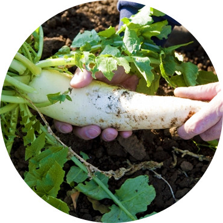
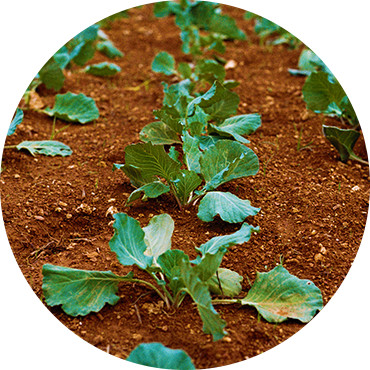
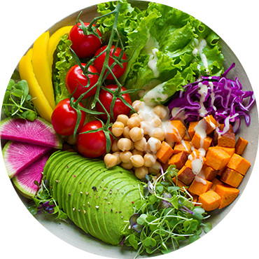

「スグ食べ」は、厳選したオーガニック農家さんの穫れたて野菜を販売しています。 食材から選べるのはもちろん、生産者からも選べます。 生産方法や生産地、それぞれ異なるこだわりなどで、お気に入りの農家さんを見つけてください。 最短で24時間以内に届く新鮮なオーガニック野菜宅配サービスです。
スグ食べが選ばれる3つの理由
-
1. 本当の意味での産地直送
「なるべく収穫したばかりの状態で野菜を味わって欲しい。」スグ食べ では、 既存の産地直送サービスのように箱詰め用の倉庫を介すことはありません。 農家が収穫したその日に、お客様の元へ直送で野菜をお送りします。
 -
2. 安心安全な無農薬野菜
出品している生産者は、有機栽培もしくは自然栽培の農家のみ。 全ての商品が無農薬・無化学肥料など、安全にこだわって生産された「オーガニック農作物」です。 そのため、どの商品も安心してお買い求めいただけます。
 -
3. たくさんの旬な野菜との出会い
年間数十種の野菜を作る生産者から今が旬の多様な野菜が届きます。 スグ食べでは生産者ごとに商品が異なります。中には年間100種類もの多品種生産をしている 生産者も。旬な野菜はもちろん、珍しい野菜とも出会えます。
